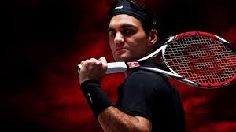
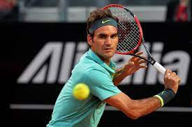
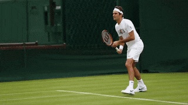
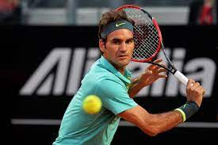
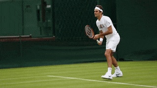

Welcome To the Life of Roger Federer

Roger Federer
Roger Federer (German: [ˈrɔdʒər ˈfeːdərər]; born 8 August 1981) is a Swiss professional tennis player. He is ranked No. 17 in the world by the Association of Tennis Professionals (ATP). He has won 20 Grand Slam men's singles titles, an all-time record shared with Rafael Nadal and Novak Djokovic. Federer has been world No. 1 in the ATP rankings a total of 310 weeks – including a record 237 consecutive weeks – and has finished as the year-end No. 1 five times. Federer has won 103 ATP singles titles, the second most of all-time behind Jimmy Connors, including a record six ATP Finals.


 
Matches By Roger Federer
Movies must watch
Roger Federer vs Rafel Nadal
Excellent Film to watch
Roger Federer was born on 8 August 1981, in Basel, Switzerland, to Swiss father Robert Federer and South African mother Lynette Federer. His mother was of Dutch and French ancestry. Federer spent most of his early life near the French and German border, which made him fluent in German, French, and English. Raised as a Roman Catholic, he took to playing tennis and soccer at an early age. Though everyone in his family enjoyed the game, it was young Federer who showed promise of making it big. By the time he turned 11, he became one of the ‘Top 3 Junior Tennis Players’ in Switzerland.
 